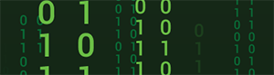

- Generated by
 1.8.20
1.8.20
|  |
Matrix
0.1
A simple C++ matrix class template.
|
This library contains a simple C++ class template for matrices. The matrices can be of arbitrary size. Memory is allocated dynamically on the heap using smart pointers. Overloaded operators for common matrix operations such as addition and multiplication are defined.
This code was written by Prof. Barak Shoshany (baraksh@gmail.com) for the course CSE 701: Foundations of Modern Scientific Programming at McMaster University, in order to demonstrate the material learned in the course. Please see the course lecture notes for more information.
The header file matrix.hpp contains both the interface and implementation of the class template. The file matrix_example.cpp demonstrates how to use the class. Complete Doxygen documentation is also provided in the docs folder.
To compile and run matrix_example.cpp, first install GCC as instructed in the course lecture notes if you do not already have it installed. You then have two options.
If you are using Visual Studio Code (the recommended IDE for our course), you can just use the configuration files included in the .vscode folder. Simply open the project's folder in VS Code and press F5 to start a debugging session. Note that the folder to the GCC binaries needs to be in your system's PATH for this to work.
If you are not using Visual Studio Code, you can compile and run the program manually from the terminal. On Windows, compile by typing
and run by typing matrix_example if using Command Prompt or ./matrix_example if using PowerShell.
On Linux, compile by typing
and run by typing ./matrix_example.